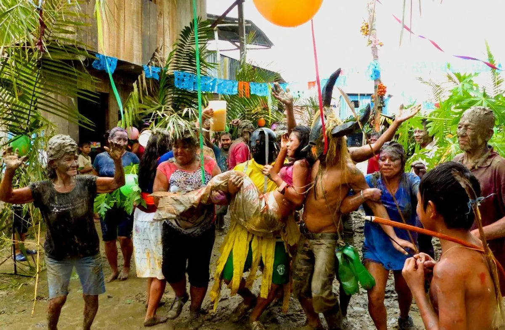
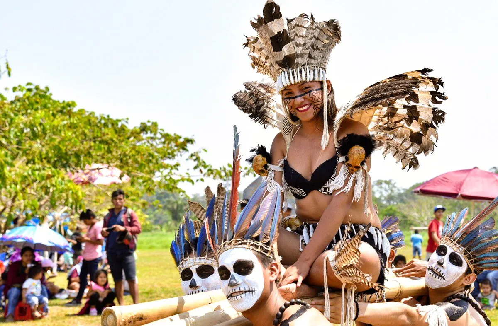
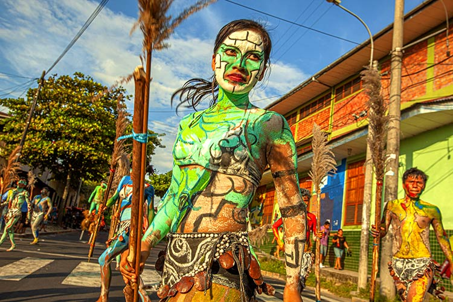

Festival de la Amazonía: Celebración en Iquitos
El Festival de la Amazonía en Iquitos es un evento cultural que resalta las tradiciones, la música, la danza y la gastronomía de la selva peruana. Se celebra cada año con la participación de comunidades locales y turistas que buscan conocer más sobre la riqueza cultural amazónica.
Historia
El Festival de la Amazonía nació con el propósito de preservar y difundir la identidad amazónica. A lo largo de los años, ha crecido en importancia y se ha convertido en un referente de la cultura regional, atrayendo a artistas y visitantes de todo el país.



Horarios y Ubicación
- Ubicación: Iquitos, Perú.
- Fecha de celebración: Generalmente en julio.
- Costo de entrada: Acceso libre a muchas actividades; algunos eventos pueden requerir entrada.
Consejos para Visitantes
- Explora todas las actividades: Desde concursos de danzas hasta ferias gastronómicas y exhibiciones artesanales.
- Viste ropa cómoda: El clima amazónico es cálido y húmedo, por lo que se recomienda llevar ropa fresca y transpirable.
- Prueba la gastronomía local: No te pierdas especialidades como el juane, el tacacho con cecina y bebidas a base de frutos amazónicos.
- Interactúa con la comunidad: Conversar con los artesanos y artistas locales te permitirá conocer mejor la cultura amazónica.
- Prepárate para el clima: Usa protector solar, repelente de insectos y lleva una botella de agua para mantenerte hidratado.